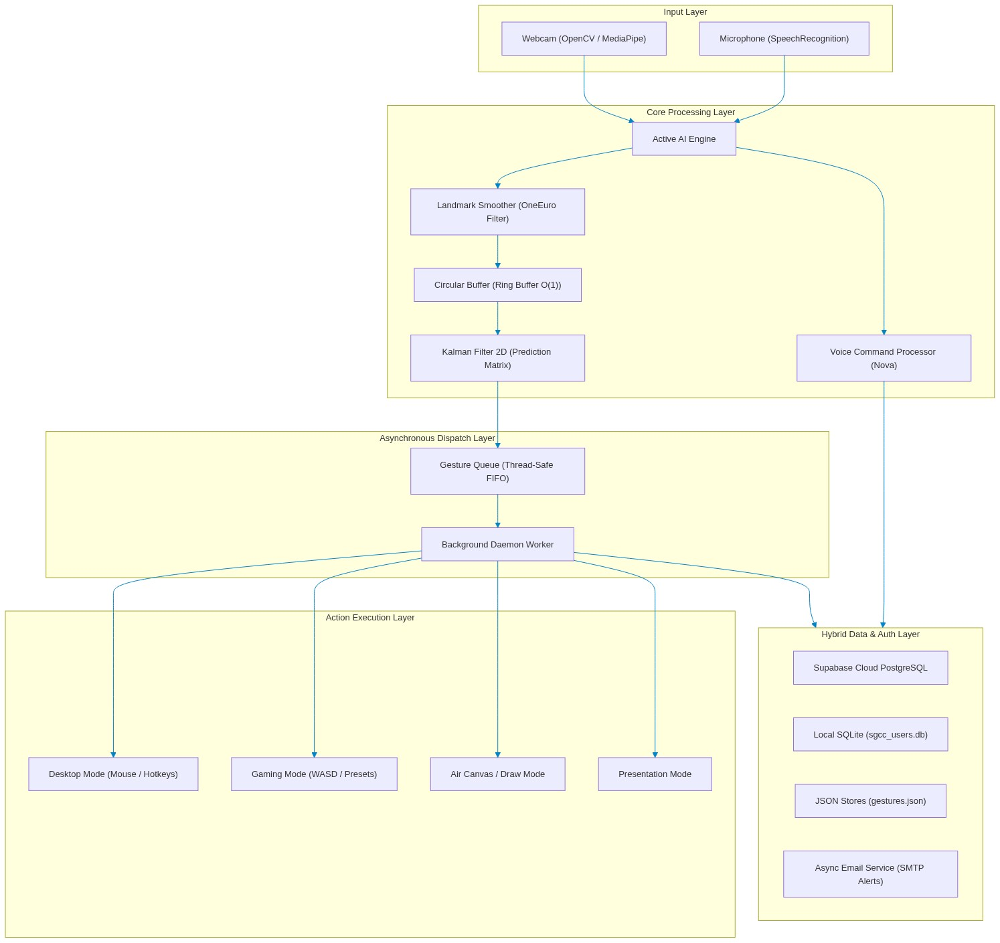
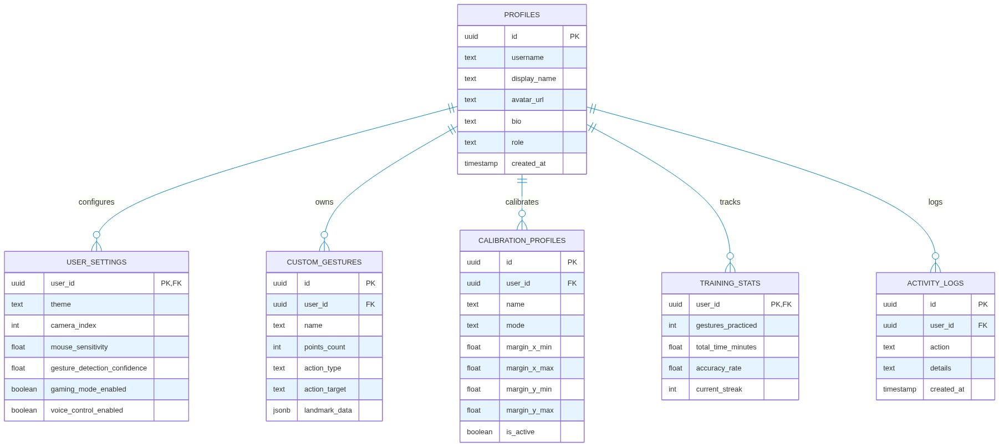
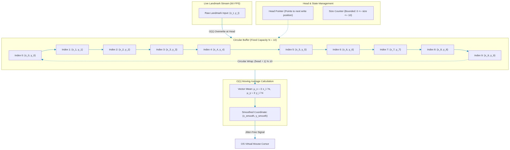
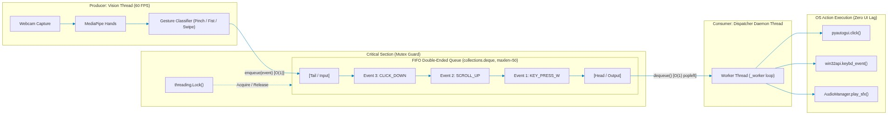
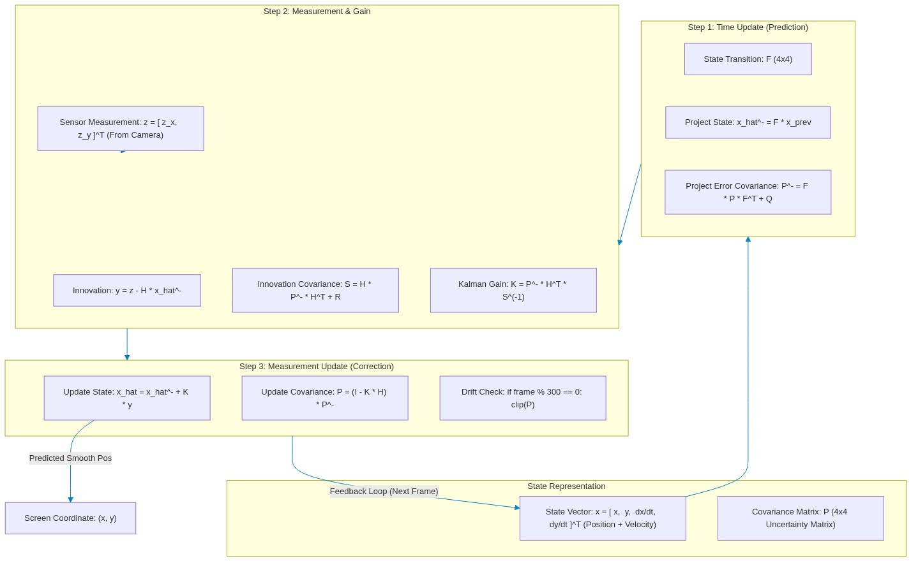
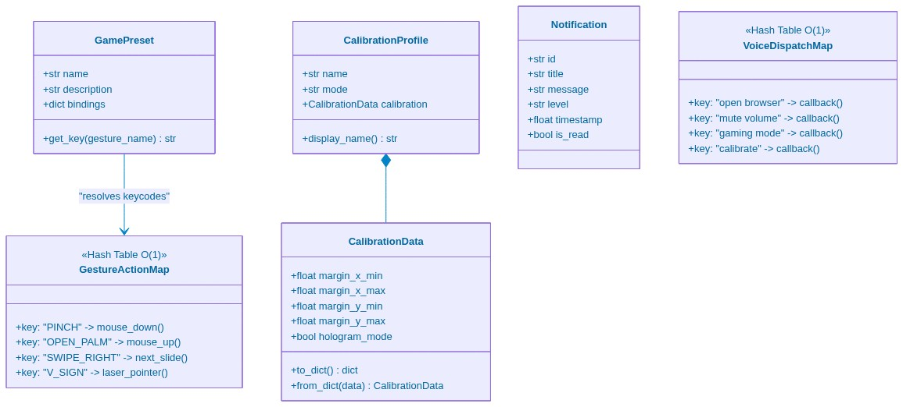

Replace traditional mice and physical keyboards with optical 3D hand tracking, circular buffer jitter-filtering, and intelligent voice command recognition — built for maximum ergonomic freedom and accessibility.
No installation required. MediaPipe Hand tracking runs locally in your browser using WebAssembly and WebGL to track your 21 landmarks at 60 FPS.
Click the button below to grant camera access. Your video stream is processed 100% locally in your browser and never leaves your device.
Aurevix integrates a dual-engine speech recognition pipeline with asynchronous OS automation dispatchers and offline text-to-speech feedback.
Dispatches complex keyboard combinations (Alt+Tab, Win+D, Ctrl+C/V) in under 80 milliseconds.
Zero cloud-latency audible confirmations for visually or motor-impaired operators.
Automatic fallback from Google Cloud Speech to offline Sphinx when internet connection drops.
Comprehensive breakdown of the computer vision pipeline, mathematical smoothing models, and cloud synchronization layers.

Circular ring buffer with fixed capacity N=10 to eradicate high-frequency tremors without lag.

Concurrent ingestion of optical video landmarks and audio spectrograms into the event dispatcher.

Euclidean metric computation across wrist, thumb tip (4), and index tip (8) for pinch triggers.

Microphone capture with multi-threaded NLP parser and OS-level virtual key injectors.

Supabase PostgreSQL cloud persistence with local SQLite failover for 100% offline uptime.

Complete data flow from physical sensors through signal processing to OS automation.
Target 10.2: Empower and promote the social, economic, and political inclusion of all, irrespective of age, sex, disability, race, ethnicity, origin, religion, or economic status.
Aurevix removes the physical barrier of traditional hardware mice and keyboards. By offering a contact-free, hands-free computer control system, it directly provides digital accessibility for users suffering from arthritis, tremors, motor neuromuscular conditions, or limb amputations.